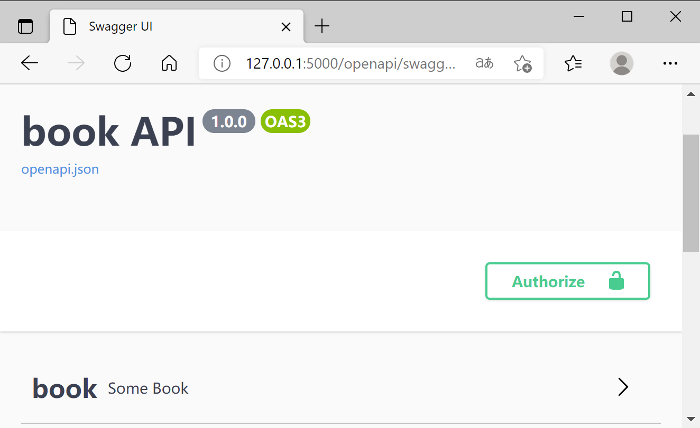
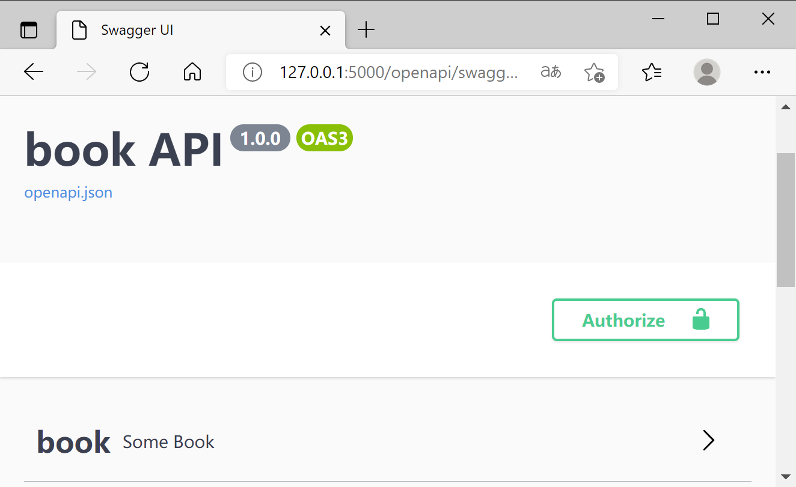

Tag
You can also specify tag for apis, like this:
1 2 3 4 5 6 7 8 9 10 | |
and then you will get the magic.

abp_tags⚓︎
New in v0.9.3
You don't need specify tag for every api.
1 2 3 4 5 6 7 8 | |
You can also specify tag for apis, like this:
1 2 3 4 5 6 7 8 9 10 | |
and then you will get the magic.

New in v0.9.3
You don't need specify tag for every api.
1 2 3 4 5 6 7 8 | |